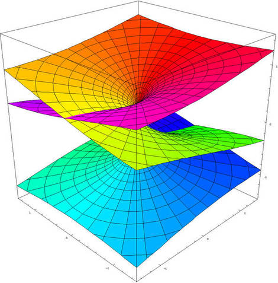

| HW | Problems | Due |
| HW1 | 1.1: 2,4,8,13,18 | Tue Jan 22 |
| HW2 | 1.2: 2,4,6,8,12,14,18,19,20 | Fri Jan 25 |
| HW3 | 1.3: 2,4,6,8,14,22,24,26 | Fri Feb 1 |
| HW4 | 1.4: 3,4,7,8,11,14,16,20
plus probs from Worksheets | Tue Feb 12 |
| HW5 | 1.5: 2,6,9,10,14,18,20,22
(#14(e) is extra credit) |
Wed Feb 20 |
| HW6 | 1.6: 2,4,5,7,8,10 | Tue Feb 26 |
| HW7 | 2.1: 2,3,4,8,10,12 | Fri Mar 1 |
| HW8 | 2.2: 1,2,5,6,7,8,10 | Fri Mar 8 |
| HW9 | 2.3: 7,8,10
1.R: 2,8,12,18,30,32,34
2.R: 2,9,14,19,21 | Tue Mar 12 |
| HW10 | 2.4: 2,4,14,18,19
(#8 is extra credit) | Tue Apr 2 |
| HW11 | 2.5: 2,3,8,10,18 | Fri Apr 5 |
| HW12 | 5.2: 2,4,8,18,24,26,30
(#22,32 are extra credit) | Tue Apr 16 |
| HW13 | 5.3: 1,3,4,6
5.R: 10,12,18
| Wed Apr 24 |
| HW14 | 3.2: 5,13
3.3: 4,6,9,18
| Tue Apr 30 |
|
|  |